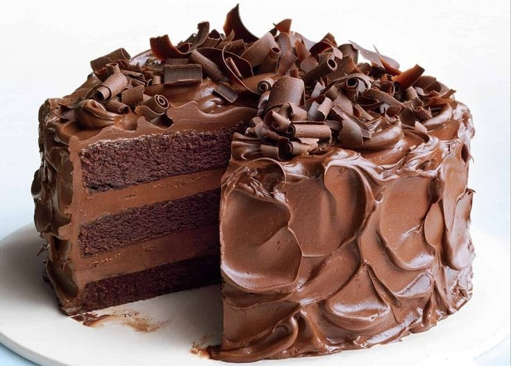

Chocolate cakeca a rich, moist dessert made with cocoa powder, flour, eggs, buttern and sugar, It's perfect for any occasion, especially for chocolate lovers

Ingredients
13/4 cups all-purpose flour
11/2 cups sugar
3/4 cup unsweetened cocoa powder
11/2 teaspoons baking powder
1/2 teaspoons baking soda
I teaspoon salt
2 large eggs
I cup buttermilk
1/2 cup vegetable oil
2 teaspoons vanilla extract
Icup hot water
Steps to Prepare Chocolate Cake
Preheat the oven to 350°F (175°C) Grease artflour two rourid cake pans
In a large mixing liourl, sift together the flour sugar cocoa powder baking powder baking soda, and salt
In another bowl whish the eggs, buttermilk oil and varulla extract together
Gradually add the wet ingredients to the dry ingredients stirring unbismooth
Slmerly add the hot water and mix well. The batter willur thun
Pour the batter into the prepared cake pans and bake fo
Once dome let the cakes cool in the pans for 10 minutes, then transfer toa wire rack focoel completely
Frost unth your faverite shocolate frosting and servel